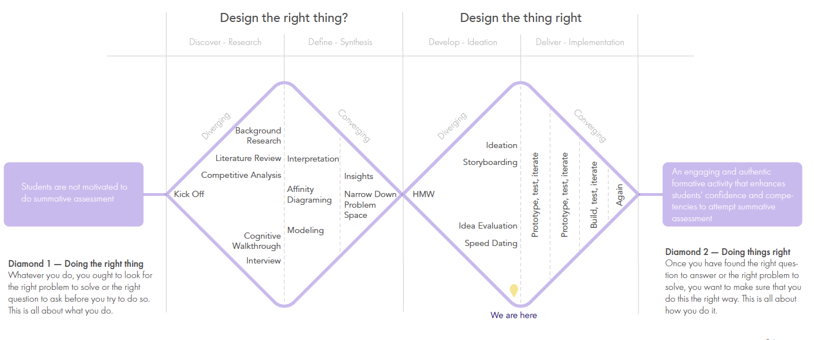

In the last 5 months, we actively engaged the target users population by conducting user interviews and secondary research. We have also conducted speed dating to understand user needs and to iterate on our solutions.
Our project focuses on how we might enrich WGU students' course experience to help them master course competencies and feel confident to attempt the summative assessment. We have formed our research questions as follows, and used them to guide our research phase:
What motivates students to engage in formative activities?
In what ways do good formative activities help students, and what do students expect from them?
What should we focus on to create good formative activities for a WGU communication course?
We conducted extensive literature review in order to understand engagement,formative activities and feedback in the context of higher education.
We identified 25 competitive products and analyzed them through various methods including positioning mapping, feature matrix and in-depth 5 UX elements analysis from secondary online resources
We analyzed 5 types of current WGU formative activities by cognitive walkthrough. We then used e-learning principles and interaction design principles to analyze the activities.
We gathered qualitative data through interviews with stakeholders including students (9), communication instructors (4), and assessment developers (2).
We used affinity diagramming to synthesize the data from all resources to arrive our insights.
We adopted double diamond model as our guiding framework. We went through the process of diverge - converge - diverge - converge.
Feedback lets students know where they might have a gap in knowledge and allows the students to be able to close that gap. When feedback is timely and informative, it allows the students to make better decisions to improve their learning.
In a WGU course, many students are assigned to a single course instructor. While social presence is important for student’s success, instructors have limited time. Most formative assessments therefore need to be assessed automatically, and they need to be effective for the students without relying on the instructors.
Busy, working adult students have to balance schoolwork with their job and family time. Since WGU’s formative activities are optional, the perceived value of doing the activities will likely be a big factor for whether students are motivated to do them.
Some of the key concerns of good assessments are the sufficiency of material coverage, reliability of the observations, and validity of their interpretation. One way to improve these aspects is to have a variety of assessment types for a mixed collection of evidence to infer from, or “triangulate” for a better understanding of student knowledge. More robust assessment results can then be used to better inform student learning.
Fun elements, games and other hooks can be helpful to gain students’ attention but it needs more than these elements to retain the attention. Once we have grabbed the students’ attention, we must keep it.
Scenario-based formative activities helps students immerse in the dialogue and react accordingly using what he/she has been taught in theory. Situational questions could be one type. Through this kind of activity, students could improve their learning by doing.
Many WGU students are busy working adults. They look at education not only as a source of learning but also expect such an education to advance their career as well. In other words, students have utility value expectations. Activities should be in alignment with such goals.